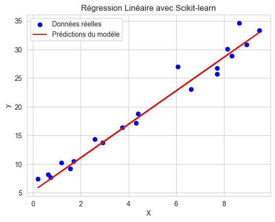

# # Régression : une introduction
# # Exemples de base:
# # Régression linéaire:
import numpy as np
import matplotlib.pyplot as plt
from sklearn.model_selection import train_test_split
from sklearn.linear_model import LinearRegression
from sklearn.metrics import mean_squared_error, r2_score
# 1. Génération de données synthétiques
np.random.seed(42) # Pour reproductibilité
X = np.random.rand(100, 1) * 10 # Caractéristiques
y = 3 * X.flatten() + 5 + np.random.randn(100) * 2 # Cible avec un peu de bruit
# 2. Division des données en ensemble d'entraînement et de test
X_train, X_test, y_train, y_test = train_test_split(X, y, test_size=0.2, random_state=42)
# 3. Création et entraînement du modèle de régression linéaire
model = LinearRegression()
model.fit(X_train, y_train)
# 4. Prédictions
y_pred = model.predict(X_test)
# 5. Évaluation du modèle
mse = mean_squared_error(y_test, y_pred)
r2 = r2_score(y_test, y_pred)
print(f"Erreur quadratique moyenne (MSE): {mse:.2f}")
print(f"Score R²: {r2:.2f}")
# 6. Visualisation des résultats
plt.scatter(X_test, y_test, color='blue', label="Données réelles")
plt.plot(X_test, y_pred, color='red', label="Prédictions du modèle")
plt.xlabel("X")
plt.ylabel("y")
plt.title("Régression Linéaire avec Scikit-learn")
plt.legend()
plt.show()Erreur quadratique moyenne (MSE): 2.61
Score R²: 0.97